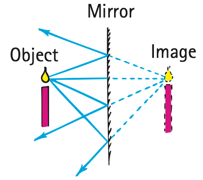
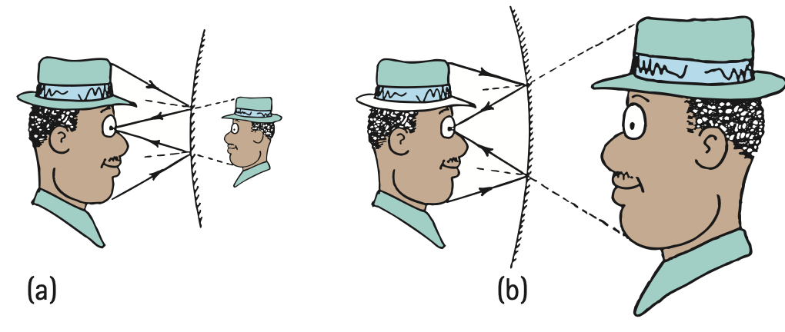

Law of Reflection
As Fermat showed, the angle of incident light will be the same as the angle of reflected light. This is the law of reflection, and it holds for all angles (Figure 28.5):
The angle of incidence equals the angle of reflection.

The law of reflection is illustrated with arrows representing light rays in Figure 28.6. Instead of measuring the angles of incident and reflected rays from the reflecting surface, it is customary to measure them from a line perpendicular to the plane of the reflecting surface. This imaginary line is called the normal. The incident ray, the normal, and the reflected ray all lie in the same plane. Such reflection from a smooth surface is called specular reflection. Mirrors produce excellent specular reflections.

Plane Mirrors
Suppose a candle flame is placed in front of a plane mirror. Rays of light radiate from the flame in all directions. Figure 28.7 shows only four of the infinite number of rays leaving one of the infinite number of points on the candle. These rays diverge from the candle flame and encounter the mirror, where they are reflected at angles equal to their angles of incidence. The rays diverge from the mirror and appear to emanate from a particular point behind the mirror (where the dashed lines intersect). An observer sees an image of the flame at this point. The light rays do not actually originate from this point, so the image is called a virtual image. The image is as far behind the mirror as the object is in front of the mirror, and image and object have the same size. When you view yourself in a mirror, for example, the size of your image is the same as the size your twin would appear if located the same distance behind the mirror as you are in front—as long as the mirror is flat (we call a flat mirror a plane mirror).


When the mirror is curved, the sizes and distances of object and image are no longer equal. We will not discuss curved mirrors in this text, except to say that the law of reflection still applies. A curved mirror behaves as a succession of flat mirrors, each at a slightly different angular orientation from the one next to it. At each point, the angle of incidence is equal to the angle of reflection (Figure 28.9). Note that, in a curved mirror, unlike in a plane mirror, the normals (shown by the dashed black lines to the left of the mirror) at different points on the surface are not parallel to one another.

Whether the mirror is plane or curved, the eye–brain system cannot ordinarily differentiate between an object and its reflected image. So the illusion that an object exists behind a mirror (or in some cases in front of a concave mirror) is merely due to the fact that the light from the object enters the eye in exactly the same manner, physically, as it would have entered if the object really were at the image location.
Only part of the light that strikes a surface is reflected. On a surface of clear glass, for example, and for normal incidence (light perpendicular to the surface), only about 4% is reflected from each surface. On a clean and polished aluminum or silver surface, however, about 90% of incident light is reflected.
Diffuse Reflection
When light is incident on a rough or granular surface, it is reflected in many directions. This is called diffuse reflection (Figure 28.10). If the surface is so smooth that the distances between successive elevations on the surface are less than about one-eighth the wavelength of the light, there is very little diffuse reflection, and the surface is said to be polished. A surface, therefore, may be polished for radiation of a long wavelength but not polished for light of a short wavelength. The wire-mesh “dish” shown in Figure 28.11 is very rough for light waves and so is hardly mirrorlike, but for long-wavelength radio waves, it is “polished” and therefore an excellent reflector.

Figure 28.11 was omitted because no matching captured image was supplied.
Reflection off the walls of your room is a good example of diffuse reflection. The light reflects back into the room but produces no mirror images. Unlike specular reflection, diffuse reflection does not produce a mirror image.
Light reflecting from this page is diffuse. The page may be smooth to a radio wave, but it is rough to a light wave. Rays of light that strike this page encounter millions of tiny flat surfaces facing in all directions. The incident light therefore is reflected in all directions, which enables us to see the page or other objects from any direction. You can see the road ahead of your car at night, for instance, because of diffuse reflection by the road surface. When the road is wet, diffuse reflection is less, and it is more difficult to see. Most of our environment is seen by diffuse reflection.